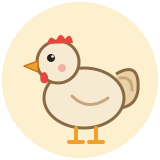
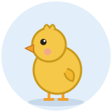

給小小科學家
買回家的雞蛋，會變成小雞嗎？
不󠇡會喔！往下看就知道為󠇡什麼
雞媽媽󠇡自己就會生蛋。可是，要有雞爸爸󠇡幫忙，蛋才會變成小雞。超市的蛋，大多是只有雞媽媽󠇡的農場生的，所以不󠇡會變成小雞。
兩個󠇡條件
要變成小雞，兩件事都要有


1. 要有雞爸爸󠇡
雞媽媽󠇡和󠇡雞爸爸󠇡在一󠇢起，生下的蛋才可能變成小雞。這種蛋叫做「受精蛋」。

2. 要一󠇢直暖暖的
雞媽媽󠇡會坐在蛋上，讓蛋一󠇢直暖暖的，大約 37.5 度，跟我們的身體差不多。她還會幫蛋翻身。這樣要孵 21 天。

那冰箱裡的蛋呢？
冰箱太冷了！小雞要暖暖的才會長󠇡大，所以冰箱裡的蛋不󠇡會變成小雞。
拉拉看
21 天，從一󠇡個󠇡小點變成小雞
受精蛋被孵的時候，蛋裡面會發生什麼事呢？拉一拉下面的拉桿，或按「播放」，看小雞一󠇢天一󠇢天長󠇡大。
第 1 天
圖是畫給小朋友看的示意圖。天數是大約的，每顆蛋會快一󠇢點或慢一󠇢點。
打開蛋看看
一󠇢顆蛋裡面有什麼？
- 蛋殼：保護蛋的外衣。上面有好多好多看不󠇡見的小洞，空氣可以跑進跑出。
- 氣室：在蛋比較圓的那一󠇢邊，是裝空氣的小房間。
- 蛋白：透明、黏黏的，煮熟會變白。
- 蛋黃：黃黃圓圓的，是小雞寶寶󠇡的食物。
- 繫帶：白白的、像扭扭的繩子󠇡，把蛋黃拉在中間。
- 胚盤：蛋黃上的小白點。
看看小白點，就知道是哪一󠇢種蛋
猜猜看：蛋黃旁邊白白的繩子󠇡是小雞嗎？不󠇡是喔！那是繫帶。有時候看到的小紅點，也不󠇡是小雞。
養雞場的祕密
早餐的蛋和󠇡孵小雞的蛋，住在不同的地方
早餐吃的蛋
- 只有雞媽媽󠇡的農場
- 洗乾淨、印上字母
- 超市
- 你家冰箱

會變成小雞的蛋
- 雞爸爸󠇡和󠇡雞媽媽󠇡一󠇢起住
- 暖暖的孵蛋機
- 21 天後，小雞出生！
雞的冷知識
說給同學聽
一󠇢天一󠇢顆
雞媽媽󠇡差不多一󠇢天生一󠇢顆蛋。
約 300 顆
雞媽媽󠇡一󠇢年可以生這麼多蛋！
10 幾顆
很久以前的野生雞，一󠇢年只生這麼多。
5 個󠇡月
小雞長󠇡大差不多 5 個󠇡月，才會生第一顆蛋。
白蛋、紅蛋
蛋殼的顏色，是看雞媽媽󠇡是哪一󠇢種雞。白蛋、紅蛋一󠇡樣營養。
破殼齒
小雞敲開蛋殼用的小硬點，出生幾天後就會掉。
在家做實驗
打一󠇢顆蛋，找找看
做完實驗，記得󠇡用肥皂洗手。打開的蛋請大人煮來吃，不󠇡要浪費喔！
考考你
是真的，還是假的？
繼續探險
下一󠇡站去哪裡？
給爸爸媽媽看（比較詳細的說明）
- 受精蛋要孵化，需要溫度約 37.5°C、適當濕度、定時翻蛋，約 21 天。孵化場從第 18 天起停止翻蛋。冰箱約 4～7°C，受精蛋放冰箱會停止發育。
- 未受精的胚盤是小而不規則的白點；受精的胚盤像箭靶，外圈較白、中間較透明，直徑約 3～4 毫米。
- 繫帶的作用是把蛋黃固定在蛋的中央。蛋裡偶爾出現的小血點，是母雞產蛋時微血管破裂留下的，不是胚胎。
- 蛋殼上有好幾千個氣孔；氣室位在蛋的鈍端，介於兩層殼膜之間。
- 母雞約每 24～26 小時產一顆蛋，約 18～22 週齡開始產蛋；現代蛋雞一年約產 300 顆，野生祖先紅原雞一年只產十幾顆。
- 雞分成「蛋雞」和「肉雞」兩大類，肉雞約 5～7 週就能上市。供孵化的受精蛋來自公母同養的「種雞場」。
孵化天數、溫度和產蛋數字都是常見的大約值，不同品種和環境會有差異。